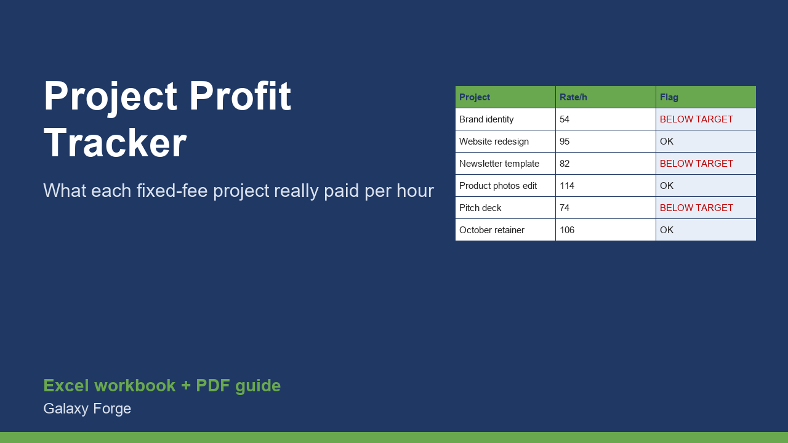

Log each fixed-fee project's fee, estimated and actual hours and direct costs, and see the hourly rate you really earned, hour overruns, and how far each project fell short of your target rate.
Fixed-fee projects hide their real hourly rate. A $3,000 project quoted at 30 hours looks like $100 an hour; finished in 52 hours with $200 of software and contractor costs, it paid $54.
This tracker turns every project into an effective hourly rate (fee minus direct costs, divided by actual hours), compares it with your target rate, and shows the hour overrun and the money left on the table against that target. Projects below target are flagged, and the summary gives your overall effective rate, best and worst project, and how many projects fell short.
Use it after every project and before quoting the next one: the overrun column tells you how much to pad your estimates.
It also separates the two different reasons a project underperforms. A project can be underpriced (the fee was too low even if the hours matched the estimate) or underestimated (the fee was fine but the work took longer than planned). The fee, estimate and actual-hours columns side by side show which one happened, so you know whether to raise your prices or fix your scoping.
Retainers and recurring monthly work fit too: enter each month as its own row, with that month's fee and hours, and you will see whether the retainer still pays your target rate as the client's requests grow.
1) On Settings, enter your target hourly rate. 2) On Projects, add one row per project: name, client, fee, estimated hours, actual hours and direct costs. 3) Read the effective rate and flag on each row, and Summary for the totals.
Price: $12, one-time. Download: freelance_project_profitability_tracker.xlsx (Settings, Projects, Summary) and this guide. Works in Excel 2016 or later, Excel for Mac and Excel on the web; opens in Google Sheets and LibreOffice.
New product, listed 2026-10-29: no sales or reviews yet. Example figures in the workbook are illustrative.
This workbook is a tracking tool, not financial, tax or legal advice. It does not calculate income tax or self-employment tax.